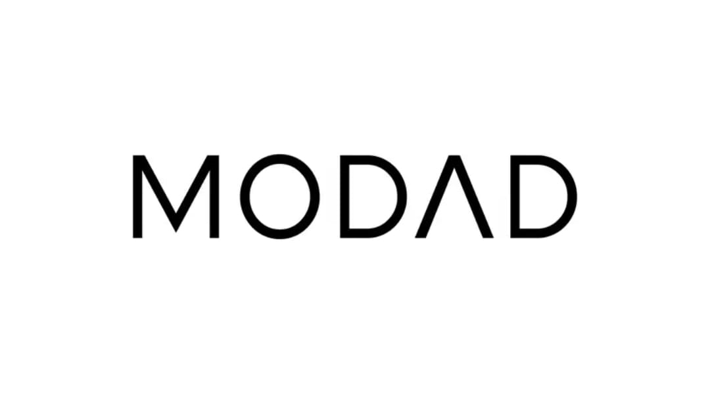
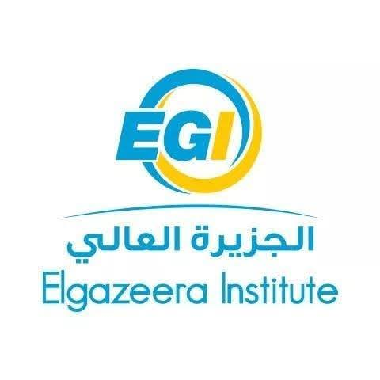
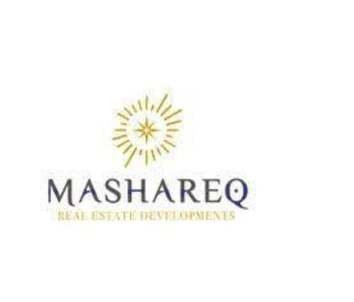
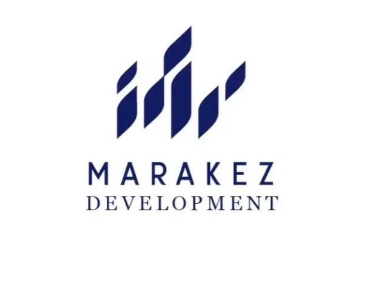
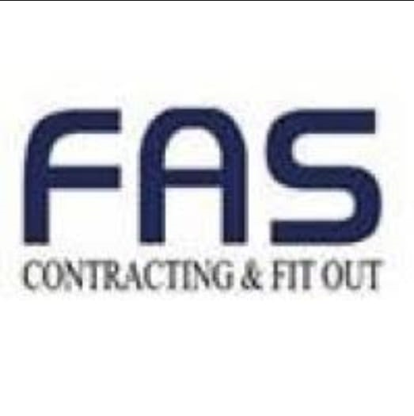
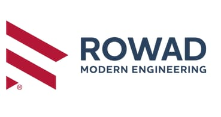
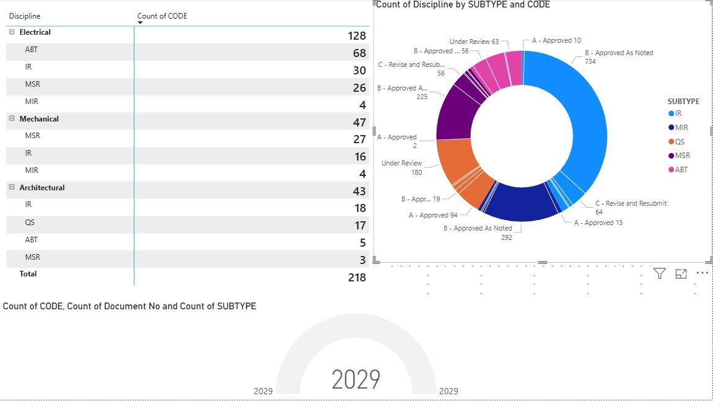
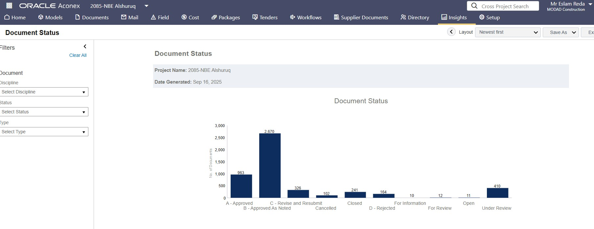

Senior Document Controller
Modad Contracting
5 May 2025 – 20 Nov 2025
Senior Document Controller
“Building efficient document control systems and supporting project success through data-driven decision making.”
Phone
Location
Cairo, Egypt
Date of Birth
5 Feb 1992
Military Service
Exempted

Al-Jazeera Academy – Cairo (2012 – 2018)
Studied the fundamentals of management, information systems, and databases, with a focus on using technology to support administrative decisions. Certified by the Egyptian Ministry of Higher Education.
Enhanced efficiency in office and administrative work, enabling me to produce accurate reports and manage simple databases.
Gained a deeper understanding of the employee lifecycle, improving my ability to interact with teams and link HR management with document control.
Improved communication with technical and administrative teams and enhanced decision-making abilities in project environments.
Senior Document Controller with 9+ years of professional experience across construction and real estate projects, specializing in project document control, project coding, controlled submissions, management reporting, and remote project support in Egypt and Saudi Arabia.
Establishing robust document control systems from the ground up, ensuring compliance and efficiency.
Analyzing and improving document workflows to reduce delays and enhance team productivity.
Creating insightful dashboards and reports that empower management with actionable data.
Implementing role-based access to ensure data confidentiality and integrity.
Ensuring stakeholders can retrieve accurate information swiftly and securely.
Adhering to ISO standards and project-specific requirements for full auditability.

Modad Contracting

Mosharaq Real Estate Development

Marakez Real Estate Development

FAS CONSTRUCTIONS

Rowad modern engineering

An interactive dashboard built to track document submission statuses, identify delays, and provide management with a high-level overview of project health. This tool was instrumental in improving decision-making speed.

Designed and implemented a comprehensive document review and approval workflow within Aconex for a high-profile banking project. This standardized the process, created a clear audit trail, and significantly reduced review cycle times.
"Eslam's ability to structure a document control system from scratch was instrumental to our project's success. His data-driven reports gave us unprecedented clarity."Eng. Osama Gamal , Technical Office Manager, Mashareq Real Estate Development
I am committed to lifelong learning and continuously enhancing my skills. Currently, I am focused on: